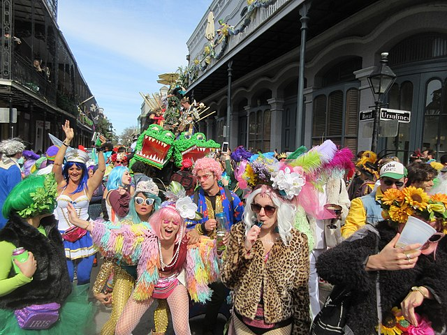
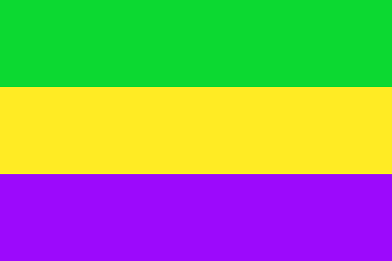

About
Mardi Gras holiday in New Orleans
The holiday of Mardi Gras is celebrated in all of Louisiana, including the city of New Orleans. Celebrations are concentrated for about two weeks before and through Shrove Tuesday, the day before Ash Wednesday (the start of lent in the Western Christian tradition). Usually there is one major parade each day (weather permitting). many days have several large parades. In the final week, many events occur throughout New Orleans and surrounding communities, including parades and balls (some of them masquerade balls). The parades in New Orleans are organized by social clubs known as krewes, most follow the same parade schedule and route each year.
A little history
The first record of Mardi Gras being celebrated in Louisiana was at the mouth of the Mississippi River in what is now lower Plaquemines Parish, Louisiana, on March 2, 1699. Iberville, Bienville, and their men celebrated it as part of an observance of Catholic practice. The date of the first celebration of the festivities in New Orleans is unknown. In 1875 Louisiana declared Mardi Gras a legal state holiday. War, economic, political, and weather conditions sometimes led to cancellation of some or all major parades, especially during the American Civil War, World War I and World War II, but the city has always celebrated Carnival. In 2020, two parade attendees—one during the Nyx parade, and one during the Endymion parade, were killed after being struck and run over in between interconnected "tandem floats" towed by a single vehicle. Following the incident during the Nyx parade, there were calls for New Orleans officials to address safety issues with these floats (including outright bans, or requiring the gaps to be filled in using a barrier).

Traditional colors
The colors traditionally associated with Mardi Gras in New Orleans are purple, green, and gold. The colors were first specified in proclamations by the Rex organization during the lead-up to their inaugural parade in 1872, suggesting that balconies be draped in banners of these colors. It is unknown why these specific colors were chosen. some accounts suggest that they were initially selected solely on their aesthetic appeal, as opposed to any true symbolism.
So what can be seen there?
Shrove Tuesday is a day to be remembered by strangers in New Orleans, for that is the day for fun, frolic, and comic masquerading. All of the mischief of the city is alive and wide awake in active operation. Men and boys, women and girls, bond and free, white and black, yellow and brown, exert themselves to invent and appear in grotesque, quizzical, diabolic, horrible, strange masks, and disguises. Human bodies are seen with heads of beasts and birds, beasts and birds with human heads; demi-beasts, demi-fishes, snakes' heads and bodies with arms of apes; man-bats from the moon; mermaids; satyrs, beggars, monks, and robbers parade and march on foot, on horseback, in wagons, carts, coaches, cars, &c., in rich confusion, up and down the streets, wildly shouting, singing, laughing, drumming, fiddling, fifeing, and all throwing flour broadcast as they wend their reckless way.

The Mayor- LaToya Cantrell
LaToya Cantrell (born April 3, 1972) is an American politician serving as the Mayor of New Orleans, Louisiana since May 7, 2018. A Democrat, Cantrell is the first woman to hold the office. Before becoming mayor, Cantrell represented District B on the New Orleans City Council from 2012–2018. She is the first woman to hold the position in the city's history. Once in office, she established a new Office of Youth and Families, with the goal of creating a strategic plan to address families in crisis in the city. Cantrell also founded a Gun Violence Reduction Council, tasked with finding solutions to violent crime. She Starting with a push to rededicate hotel taxes collected within the city for city use, Cantrell has focused on her #fairshare initiative to improve city infrastructure, public transportation, public parks, and green spaces.